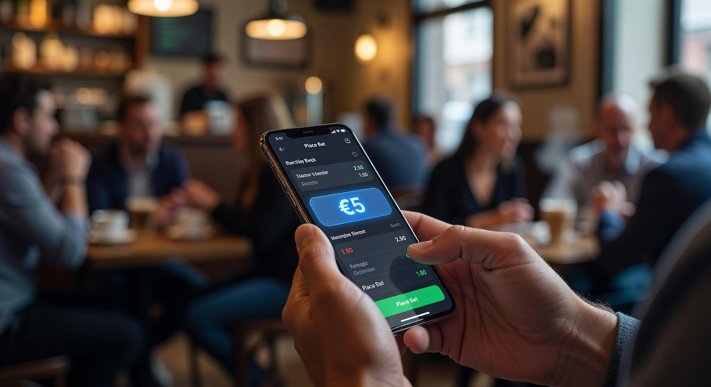
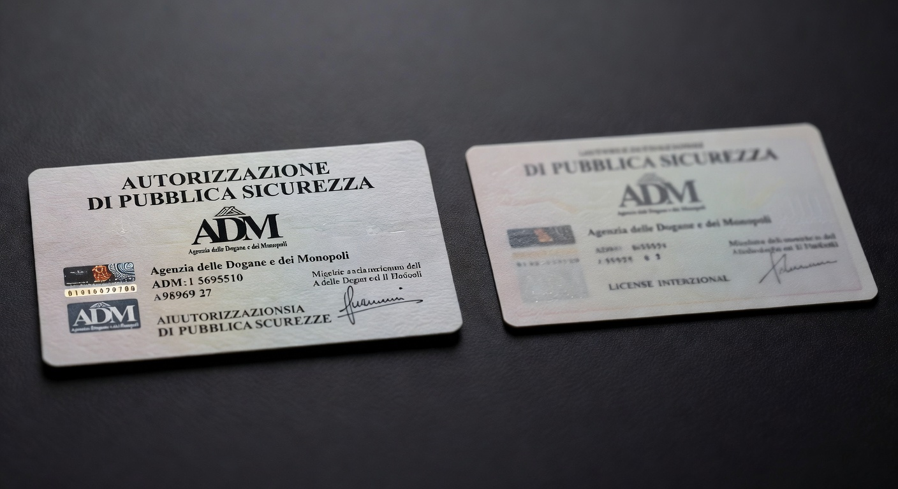
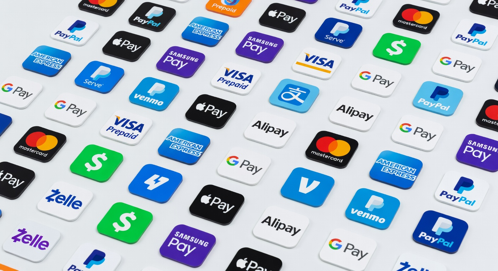

Siti scommesse deposito minimo 5 euro senza documento: guida ai migliori
Il panorama del gioco d'azzardo online nel 2026 ha raggiunto vette di innovazione tecnologica e accessibilità senza precedenti. Una delle tendenze più forti dell'anno in corso è rappresentata dalla ricerca di siti scommesse deposito minimo 5 euro senza documento, piattaforme che permettono di iniziare l'esperienza ludica con un investimento contenuto e una burocrazia ridotta al minimo nelle fasi iniziali. Questa guida esplora le opportunità offerte dal mercato IT attuale, analizzando come la flessibilità economica si sposi con la velocità d'accesso.
La possibilità di accedere a un palinsesto sportivo completo versando solo 5 euro è un vantaggio non indifferente per chi desidera testare una nuova interfaccia o una specifica strategia di betting. Molti utenti preferiscono i siti non aams senza documento perché offrono una libertà d'azione immediata, rimandando la verifica dell'identità (KYC) al momento del primo prelievo. Questo approccio garantisce una privacy superiore e una rapidità d'esecuzione che i bookmaker tradizionali faticano a eguagliare nel 2026.
Scommettere online richiede però consapevolezza. Sebbene l'importo di ingresso sia basso, la scelta della piattaforma deve ricadere su portali sicuri e certificati da autorità internazionali. Nel corso di questo approfondimento, vedremo quali sono i criteri per riconoscere un operatore affidabile, quali metodi di pagamento supportano ricariche così basse e come massimizzare il valore dei piccoli depositi attraverso bonus mirati.
Migliori bookmaker con ricarica da 5€ e registrazione rapida
La selezione dei migliori siti scommesse deposito minimo 5 euro senza documento per il 2026 si basa su test rigorosi effettuati dai nostri esperti. Abbiamo analizzato la fluidità delle piattaforme, la varietà delle quote e, soprattutto, la semplicità del processo di iscrizione. Questi operatori permettono di creare un account in pochi secondi, spesso utilizzando sistemi di autenticazione rapida o semplicemente confermando l'indirizzo email, senza dover caricare immediatamente foto di carte d'identità o passaporti.
Tra i nomi di spicco del 2026 troviamo Millioner, un operatore che ha saputo conquistare il mercato IT grazie a un'interfaccia estremamente pulita e a un palinsesto che copre anche gli sport più di nicchia. Potete scoprire le loro promozioni su Millioner, dove il deposito da 5 euro è lo standard per molti nuovi utenti. Allo stesso modo, Roulettino si distingue per la rapidità dei pagamenti e per un sistema di scommesse live tra i più avanzati del settore; maggiori dettagli sono disponibili su Roulettino.
Non possiamo dimenticare Wyns, una piattaforma che nel 2026 ha introdotto strumenti di analisi statistica integrati per aiutare i giocatori nelle proprie scelte. Per chi cerca un'esperienza completa, Wyns rappresenta una scelta solida. Anche Kinbet ha scalato le classifiche di gradimento, focalizzandosi sull'integrazione delle criptovalute, visitabile su Kinbet. Infine, Dragonia offre un ambiente di gioco immersivo con una forte componente di gamification, consultabile su Dragonia.
I criteri di selezione per la nostra classifica
Per definire quali siano i reali vantaggi di un portale rispetto a un altro, applichiamo parametri oggettivi. Il primo è la trasparenza delle condizioni: un deposito basso non deve nascondere commissioni elevate. Verifichiamo poi la stabilità del software, assicurandoci che il sito sia ottimizzato per dispositivi mobile, dato che nel 2026 oltre l'85% delle scommesse avviene tramite smartphone. La presenza di licenze affidabili come quella della Malta Gaming Authority o di Curaçao eGaming è un requisito imprescindibile per la nostra approvazione.
Un altro aspetto fondamentale è l'assistenza clienti. I siti scommesse deposito minimo 5 euro senza documento di qualità offrono supporto in tempo reale tramite live chat in lingua italiana. Valutiamo anche la profondità dei mercati: non basta offrire la Serie A, cerchiamo operatori che includano eSports, scommesse politiche e intrattenimento, garantendo varietà a ogni tipologia di scommettitore. La velocità di caricamento delle pagine e la sicurezza dei protocolli SSL completano la nostra analisi tecnica.
Perché gli utenti cercano siti scommesse deposito minimo 5 euro senza documento?

La domanda per i siti scommesse deposito minimo 5 euro senza documento è cresciuta esponenzialmente negli ultimi dodici mesi. Il motivo principale risiede nella barriera all'ingresso estremamente ridotta. Molti giocatori amatoriali non sono disposti a investire cifre consistenti come 20 o 50 euro per iniziare, preferendo testare l'affidabilità di un sito con una somma simbolica. Questo approccio permette di esplorare le funzionalità del bookmaker senza esporsi a rischi finanziari significativi.
Inoltre, l'assenza della richiesta immediata dei documenti risponde a un'esigenza di privacy. In un'era digitale dove la protezione dei dati personali è al centro del dibattito, poter iniziare a giocare senza condividere istantaneamente documenti sensibili è percepito come un grande valore aggiunto. Questo non significa che i controlli non esistano, ma semplicemente che l'utente può decidere con calma quando completare il processo di verifica, solitamente prima di prelevare le vincite. È un modello che favorisce l'esperienza utente immediata.
Un altro fattore è la velocità. Nel 2026, i ritmi di vita sono frenetici e un processo di registrazione che richiede 15 minuti può scoraggiare l'utente. I siti scommesse deposito minimo 5 euro senza documento eliminano gli attriti iniziali, permettendo di piazzare una giocata last-minute su un evento sportivo imminente in meno di due minuti. Questa reattività è ciò che distingue i nuovi brand emergenti dai giganti storici del settore che spesso sono appesantiti da procedure burocratiche obsolete.
Privacy e velocità: i vantaggi principali
Entrando nel dettaglio, la privacy garantita da queste piattaforme permette di evitare che le informazioni personali vengano archiviate in database centralizzati prima ancora di aver deciso se si vuole realmente utilizzare il servizio a lungo termine. Molti utenti utilizzano questi siti come un "banco di prova". Se l'esperienza di gioco è soddisfacente e le vincite iniziano ad arrivare, allora il giocatore si sente più propenso a completare la procedura di KYC (Know Your Customer) richiesta per legge dalle giurisdizioni internazionali.
La velocità non riguarda solo l'iscrizione, ma anche l'usabilità generale. Un portale che non richiede documenti subito tende ad avere un'architettura software più snella. Questo si traduce in app più veloci e siti web più reattivi. Per chi ama le scommesse live, dove ogni secondo conta per accaparrarsi la quota migliore, questa rapidità operativa diventa un vantaggio competitivo cruciale. In questo contesto, piattaforme come astromania casino hanno dimostrato come l'integrazione di sistemi di pagamento rapidi possa rivoluzionare il settore.
Differenza tra licenza ADM e licenze internazionali

Nel mercato italiano del 2026, la distinzione tra operatori ADM (Agenzia delle Dogane e dei Monopoli) e quelli con licenze internazionali è fondamentale per capire come funzionano i siti scommesse deposito minimo 5 euro senza documento. I siti ADM sono obbligati per legge a richiedere il documento di identità entro 30 giorni dall'iscrizione e spesso impongono limiti di deposito iniziali più rigidi. Al contrario, i siti con licenze estere possono offrire maggiore flessibilità burocratica nelle fasi iniziali del rapporto con il cliente.
Le licenze rilasciate dalla Malta Gaming Authority (MGA) o dalla UK Gambling Commission sono considerate tra le più sicure al mondo, seconde solo a quella italiana per quanto riguarda la tutela del giocatore. Tuttavia, sono i siti scommesse deposito minimo 5 euro senza documento autorizzati da Curaçao eGaming a offrire la massima libertà in termini di limiti di versamento e velocità di registrazione. Questi operatori sono legali e sicuri, a patto di scegliere brand consolidati e recensiti positivamente dalla community IT.
È importante sottolineare che, indipendentemente dalla licenza, la sicurezza del denaro e la correttezza dei giochi sono garantite da enti certificatori indipendenti. La differenza principale risiede nell'approccio alla verifica dell'identità: mentre l'ADM richiede l'invio del documento quasi subito per convalidare il conto, i siti internazionali permettono una maggiore flessibilità. Questo rende i siti scommesse deposito minimo 5 euro senza documento esteri molto popolari tra chi cerca un'esperienza meno vincolata.
Vantaggi di scommettere con un deposito minimo di 5 euro
Scegliere siti scommesse deposito minimo 5 euro senza documento non è solo una questione di risparmio, ma una vera e propria strategia di gestione del gioco. Un deposito di 5 euro permette di diversificare le proprie giocate senza intaccare in modo significativo il budget mensile. Per un utente che vuole svagarsi senza stress, questa cifra rappresenta il compromesso ideale tra il brivido della scommessa reale e la prudenza finanziaria. È la porta d'ingresso perfetta per il mondo del bonus 5 euro scommesse.
Un altro vantaggio è la possibilità di testare diverse piattaforme contemporaneamente. Con soli 25 euro, un giocatore può aprire conti su cinque diversi siti ricarica minima 5 euro, confrontando quote, mercati e bonus di benvenuto in tempo reale. Questo "shopping di quote" è essenziale nel 2026 per massimizzare i ritorni potenziali, poiché le differenze tra un bookmaker e l'altro possono essere sostanziali, specialmente sui mercati meno battuti come il basket asiatico o i tornei minori di tennis.
Infine, il deposito minimo basso favorisce l'apprendimento. I nuovi scommettitori possono imparare a gestire le proprie emozioni e a comprendere il funzionamento delle scommesse multiple o dei sistemi senza il peso psicologico di aver investito somme ingenti. In questo senso, i siti scommesse deposito minimo 5 euro senza documento svolgono una funzione quasi educativa, permettendo di fare esperienza sul campo con un rischio estremamente controllato.
Gestione del bankroll per piccoli budget
Gestire un budget di soli 5 euro richiede disciplina. Una tecnica comune utilizzata dagli esperti nel 2026 è quella di frazionare il deposito in micro-scommesse. Ad esempio, piazzare dieci scommesse da 0,50€ permette di rimanere in gioco più a lungo e aumenta le probabilità statistica di chiudere la sessione in attivo. Molti siti scommesse deposito minimo 5 euro senza documento permettono puntate minime molto basse, proprio per favorire questo tipo di approccio metodico al gioco.
Inoltre, è fondamentale non lasciarsi tentare dal ricaricare immediatamente in caso di perdita. Il bello di scommettere con 5 euro è proprio il limite autoimposto. Se la strategia non funziona, si è perso solo il costo di una colazione al bar. Questa mentalità aiuta a mantenere il gioco un piacere e non un'ossessione, promuovendo indirettamente il gioco responsabile. Molti casino con deposito minimo 5 euro senza documento offrono strumenti di autolimitazione proprio per aiutare in questa gestione.
Metodi di pagamento per i siti scommesse deposito minimo 5 euro senza documento

La disponibilità di metodi di pagamento adeguati è l'ossatura su cui poggiano i siti scommesse deposito minimo 5 euro senza documento. Non tutti i sistemi finanziari accettano transazioni così piccole senza applicare commissioni sproporzionate. Nel 2026, la tecnologia ha fatto passi da gigante, introducendo soluzioni istantanee che rendono il versamento di 5 euro economico e veloce sia per l'utente che per l'operatore di gioco.
Le carte di credito e debito dei circuiti Visa e Mastercard rimangono un punto di riferimento, ma la vera rivoluzione è arrivata dai portafogli elettronici. Servizi come Revolut, Wise o i classici Skrill e Neteller hanno ottimizzato le loro infrastrutture per gestire micro-pagamenti in tempo reale. Quando si utilizzano i siti scommesse deposito minimo 5 euro senza documento, questi strumenti permettono di avere i fondi disponibili sul conto gioco in pochi istanti, garantendo al contempo un livello di sicurezza crittografica superiore.
In Italia, l'uso del di pagamento tramite app come Satispay o Postepay è diventato uno standard. Queste opzioni sono particolarmente apprezzate perché sono profondamente integrate nel tessuto finanziario nazionale e offrono interfacce utente semplificate. I migliori siti scommesse deposito minimo 5 euro senza documento includono sempre almeno 4 o 5 alternative diverse per il versamento, assicurando che ogni giocatore possa trovare la soluzione più comoda per le proprie esigenze.
Criptovalute e portafogli elettronici
Il 2026 ha segnato la definitiva consacrazione di Bitcoin e delle stablecoin (come USDT) nel mondo del betting online. Utilizzare le criptovalute sui siti scommesse deposito minimo 5 euro senza documento offre vantaggi impareggiabili in termini di anonimato e assenza di limiti geografici. Le commissioni di rete, grazie ai protocolli di secondo livello come Lightning Network, sono ormai trascurabili, rendendo conveniente anche un deposito di soli 5 euro in valuta digitale.
I portafogli elettronici, d'altra parte, fungono da cuscinetto tra il conto bancario principale e il sito di scommesse. Questo aggiunge un ulteriore livello di privacy, poiché nell'estratto conto bancario apparirà solo il trasferimento verso l'e-wallet e non il nome del bookmaker. Per chi cerca i siti scommesse deposito minimo 5 euro senza documento per mantenere un profilo basso, questa combinazione tra portafogli digitali e piattaforme agili è la soluzione vincente.
Carte prepagate e voucher ricaricabili
Per chi non desidera utilizzare strumenti digitali collegati a un conto, le carte prepagate e i voucher fisici rimangono una scelta validissima. Acquistare un voucher in un punto vendita fisico e inserire il codice sul sito permette di operare in totale sicurezza. Molti siti scommesse deposito minimo 5 euro senza documento accettano Paysafecard o sistemi simili, che sono l'ideale per chi vuole gestire il proprio budget di gioco in contanti, trasformandoli in credito digitale istantaneo.
Queste soluzioni eliminano completamente il rischio di frodi informatiche legate al furto di dati bancari, poiché il voucher non è collegato a nessuna informazione sensibile. È il metodo preferito da chi si approccia per la prima volta ai siti scommesse deposito minimo 5 euro senza documento e vuole procedere con la massima cautela. La diffusione capillare di questi voucher nei tabaccai e nelle edicole italiane nel 2026 rende questa opzione estremamente accessibile a chiunque.
Bonus di benvenuto attivabili con ricarica minima
Uno dei miti da sfatare è che con una ricarica bassa non si abbia diritto alle promozioni. Al contrario, i siti scommesse deposito minimo 5 euro senza documento nel 2026 competono ferocemente per attirare nuovi utenti, offrendo bonus di benvenuto anche a chi versa cifre contenute. Spesso si tratta di "fun bonus" o scommesse gratuite (free bets) che possono raddoppiare o triplicare il valore del primo deposito, offrendo così più chance di vittoria.
Esistono diverse tipologie di bonus di ingresso. Alcuni operatori offrono un bonus del 100% sul primo deposito, portando il saldo a 10 euro con un investimento di 5. Altri preferiscono regalare un numero fisso di giri gratis su slot selezionate o una scommessa senza rischio. Quest'ultima è particolarmente vantaggiosa: se la prima scommessa da 5 euro risulta perdente, il bookmaker rimborsa l'intera somma sul conto dell'utente sotto forma di bonus. È una dinamica tipica dei siti ricarica minima 5 euro di alta qualità.
È però essenziale leggere attentamente i termini e le condizioni (T&C). Ogni bonus di benvenuto ha dei requisiti di scommessa (wagering) che devono essere soddisfatti prima di poter prelevare le vincite. Nel 2026, la trasparenza è migliorata, ma è sempre bene controllare la validità temporale dell'offerta e le quote minime richieste per il riscatto del bonus. Scommettere con saggezza significa anche saper sfruttare questi incentivi per esplorare i siti scommesse deposito minimo 5 euro senza documento senza ansie.
Come aprire un conto gioco in pochi passaggi
L'apertura di un account sui siti scommesse deposito minimo 5 euro senza documento è stata semplificata al massimo per riflettere le esigenze del mercato 2026. Il primo passo è scegliere un operatore affidabile dalla nostra lista. Una volta atterrati sulla home page, il tasto "Registrati" è solitamente ben visibile. In questa fase, vengono richiesti solo dati essenziali: un nome utente, una password, un indirizzo email e, talvolta, un numero di cellulare per la verifica tramite SMS.
Dopo aver confermato l'account tramite il link ricevuto via email, l'utente viene indirizzato direttamente alla sezione depositi. Qui potrà scegliere uno dei metodi di pagamento disponibili e inserire l'importo di 5 euro. Grazie alle moderne tecnologie di pagamento, il trasferimento è immediato. A questo punto, senza aver inviato alcuna foto del documento, il giocatore è già pronto per navigare nel palinsesto e piazzare la sua prima giocata. Questa fluidità è il marchio di fabbrica dei moderni siti scommesse deposito minimo 5 euro senza documento.
Ricordiamo che, sebbene l'invio del documento non sia richiesto per iniziare, è una procedura che andrà completata in futuro. La maggior parte dei siti richiede la verifica dell'identità solo quando il totale dei prelievi supera una certa soglia o dopo un periodo prestabilito di attività. Preparare una scansione chiara del proprio documento d'identità e un certificato di residenza aggiornato è comunque una buona pratica per non avere rallentamenti quando si deciderà di incassare le proprie vincite dai siti scommesse deposito minimo 5 euro senza documento.
Sicurezza informatica nei siti scommesse deposito minimo 5 euro senza documento
La sicurezza è la preoccupazione principale per chi gioca online. Nel 2026, i siti scommesse deposito minimo 5 euro senza documento utilizzano protocolli di crittografia end-to-end avanzati, simili a quelli impiegati dalle istituzioni bancarie globali. L'adozione del protocollo TLS 1.3 garantisce che ogni scambio di dati tra l'utente e il server sia protetto da intercettazioni esterne. Inoltre, la protezione dei fondi è assicurata dalla segregazione dei conti: il denaro dei giocatori è tenuto su conti bancari separati da quelli operativi dell'azienda.
Un altro elemento di sicurezza è l'autenticazione a due fattori (2FA). Anche se non viene richiesto il documento subito, i migliori siti scommesse deposito minimo 5 euro senza documento incoraggiano l'uso di app come Google Authenticator per proteggere l'accesso all'account. Questo previene accessi non autorizzati anche in caso di furto della password. La lotta alle frodi è supportata anche dall'intelligenza artificiale, che monitora schemi di gioco anomali per proteggere sia l'integrità delle scommesse che l'account dell'utente.
Infine, la trasparenza del software è garantita dall'uso di generatori di numeri casuali (RNG) certificati per i giochi virtuali e da flussi di dati ufficiali per gli eventi sportivi. I siti scommesse deposito minimo 5 euro senza documento che operano con licenze internazionali sono regolarmente sottoposti ad audit da parte di enti come eCOGRA o iTech Labs. Queste certificazioni sono la prova che la piattaforma opera in modo onesto e che le probabilità di vincita dichiarate sono reali e non manipolate.
Giri Gratis senza documenti
Una delle caratteristiche più ricercate nei siti scommesse deposito minimo 5 euro senza documento è la presenza di promozioni legate ai giochi da casinò, in particolare i giri gratis (free spins). Spesso, oltre alla sezione sportiva, questi portali offrono un'area slot machine di alto livello. Regalare giri gratis senza richiedere documenti immediati è una strategia di marketing molto efficace nel 2026 per permettere agli utenti di provare i nuovi titoli dei principali provider mondiali.
Brand come Wildtokyo Casinò e Astromania Casinò sono diventati celebri per i loro pacchetti di benvenuto che includono centinaia di giri gratis con requisiti di scommessa molto bassi. Anche Diva Spin Casinò e Lunubet Casinò offrono regolarmente promozioni settimanali dove, a fronte di un piccolo deposito scommesse, vengono accreditati bonus per le slot. Questa integrazione tra scommesse e casinò rende l'esperienza di gioco varia e mai monotona sui siti scommesse deposito minimo 5 euro senza documento.
Altri operatori come Spinempire Casinò, Boomerangbet Casino e VegasHero Casinò puntano molto sulla velocità: i giri gratis vengono accreditati istantaneamente dopo il deposito di 5 euro. Per l'utente IT, questo significa poter passare da una scommessa sulla partita di calcio a qualche spin sulla propria slot preferita senza dover cambiare piattaforma. Anche portali storici che si sono evoluti nel 2026, come 888Casino, WinBet, Winamax e Wonderluck Casinò, hanno adottato politiche simili per rimanere competitivi con i nuovi siti scommesse deposito minimo 5 euro senza documento.
Evoluzione del mercato del betting nel 2026
Il 2026 ha visto un cambiamento radicale nel modo in cui percepiamo il gioco online. Non si tratta più solo di indovinare un risultato, ma di partecipare a un ecosistema tecnologico avanzato. I siti scommesse deposito minimo 5 euro senza documento sono diventati i pionieri dell'integrazione con la realtà aumentata e il live streaming in alta definizione. Oggi è possibile guardare l'evento su cui si è scommesso direttamente dalla piattaforma, con statistiche aggiornate al millesimo di secondo che compaiono in sovrimpressione.
L'intelligenza artificiale gioca un ruolo chiave nel personalizzare l'esperienza. I siti scommesse deposito minimo 5 euro senza documento analizzano le preferenze dell'utente per suggerire mercati e quote in linea con i suoi interessi, evitando di sommergerlo con informazioni irrilevanti. Questo livello di personalizzazione aumenta il coinvolgimento e rende la navigazione più piacevole. Inoltre, l'introduzione dello SPID (Sistema Pubblico di Identità Digitale) anche per alcuni operatori internazionali ha semplificato ulteriormente la verifica, laddove richiesta, rendendo i siti di scommesse sempre più integrati con l'identità digitale moderna.
Infine, la sostenibilità economica dei modelli a basso deposito ha dimostrato che è possibile costruire business solidi puntando sulla quantità di utenti soddisfatti piuttosto che su pochi grandi scommettitori. I siti scommesse deposito minimo 5 euro senza documento rappresentano la democratizzazione del betting, rendendolo un passatempo accessibile a tutti, indipendentemente dalle proprie capacità di spesa. Per maggiori informazioni sulle regolamentazioni globali, è possibile consultare fonti autorevoli come la Wikipedia sulla storia del gioco in Italia.
Siti scommesse deposito minimo 5 euro senza documento e licenze estere
Operare su siti con licenze estere è una pratica comune per molti giocatori esperti nel 2026. Queste piattaforme, pur non essendo soggette alla normativa italiana ADM, devono comunque rispettare rigidi standard internazionali. Ad esempio, i siti scommesse deposito minimo 5 euro senza documento con licenza di Malta offrono tutele legali molto simili a quelle europee, inclusa la gestione delle controversie tramite organismi indipendenti. Scegliere un sito estero non significa rinunciare alla sicurezza, ma optare per un diverso set di regole operative.
Le licenze di Curaçao, molto frequenti tra i siti scommesse deposito minimo 5 euro senza documento, permettono agli operatori di accettare giocatori da quasi tutto il mondo e di supportare tecnologie come la blockchain in modo più agile. Questo si traduce spesso in quote leggermente più alte, poiché la pressione fiscale su questi operatori è inferiore rispetto a quella italiana. Il risparmio fiscale del bookmaker si trasforma spesso in un vantaggio per il giocatore sotto forma di payout più generosi e bonus più ricchi.
È però fondamentale fare una ricerca preventiva. Verificare la validità della licenza cliccando sul logo dell'autorità nel footer del sito è un passaggio obbligatorio. I siti scommesse deposito minimo 5 euro senza documento seri mostreranno sempre i dettagli della loro autorizzazione in modo trasparente. Leggere le opinioni di altri utenti IT su forum specializzati può fornire indicazioni preziose sulla puntualità dei pagamenti e sulla qualità del servizio, elementi che definiscono i migliori siti del mercato attuale.
Analisi dei bookmaker emergenti del 2026
L'anno 2026 è stato caratterizzato dalla nascita di brand "nativi digitali" che hanno stravolto le logiche del settore. Questi nuovi siti scommesse deposito minimo 5 euro senza documento non nascono da vecchie sale scommesse fisiche, ma sono progettati fin dal primo giorno per il cloud e il mobile. Questo permette loro di offrire interfacce incredibilmente veloci e di integrare mercati innovativi come le scommesse sugli influenzatori, i tornei di gaming professionale e persino eventi legati al metaverso.
Molti di questi nuovi attori puntano sulla componente sociale. Scommettere sui siti scommesse deposito minimo 5 euro senza documento emergenti spesso significa poter condividere le proprie "bollette" in una community interna, seguire i tipster più bravi e partecipare a classifiche con premi extra. È un modo di intendere il betting meno solitario e più interattivo, che piace molto alle nuove generazioni di scommettitori IT. La barriera dei 5 euro è il modo perfetto per invitare gli amici a unirsi al gioco senza chiedere loro un impegno finanziario oneroso.
Un esempio di questa tendenza è la crescita di piattaforme che uniscono scommesse e intrattenimento puro. I siti scommesse deposito minimo 5 euro senza documento oggi offrono anche quiz interattivi, giochi a premi in diretta e altre forme di svago che vanno oltre la semplice puntata sportiva. Questa diversificazione è ciò che permette a questi brand di crescere in un mercato altamente competitivo, offrendo un valore che i vecchi operatori faticano a proporre in modo così dinamico e integrato.
Comparazione bonus e depositi nei migliori siti scommesse
Per aiutare i lettori a orientarsi nel vasto mercato del 2026, abbiamo preparato una tabella comparativa che mette in luce le caratteristiche principali dei siti scommesse deposito minimo 5 euro senza documento più affidabili. La scelta del portale giusto dipende dalle priorità individuali: chi cerca il bonus più alto, chi la velocità di prelievo e chi il palinsesto sportivo più profondo.
| Brand | Deposito Minimo | Documento Subito? | Bonus Benvenuto | Punto di Forza |
|---|---|---|---|---|
| Millioner | 5€ | No | 100% fino a 200€ | Quote Maggiorate |
| Roulettino | 5€ | No | 50 Free Spins + Bonus Sport | App Mobile Eccellente |
| Wyns | 5€ | No | Fino a 500€ Bonus | Scommesse Live |
| Kinbet | 5€ | No | Bonus Cripto dedicato | Pagamenti Instantanei |
| Dragonia | 1€ / 5€ | No | Programma Fedeltà | Gamification |
Come si può notare, la flessibilità è la parola d'ordine. Molti di questi siti scommesse deposito minimo 5 euro senza documento offrono anche opzioni di ricarica ancora più basse, rendendo il gioco accessibile veramente a chiunque. La competizione tra questi brand garantisce che l'utente IT riceva sempre un trattamento di alto livello, con tecnologie all'avanguardia e un'attenzione costante alla sicurezza dei dati. Potete trovare ulteriori dettagli su queste piattaforme visitando il sito ufficiale della Malta Gaming Authority per verificare le licenze attive.
Nuove tecnologie di pagamento 2026
Oltre ai metodi classici, il 2026 ha introdotto soluzioni che sembravano fantascienza solo pochi anni fa. I siti scommesse deposito minimo 5 euro senza documento sono stati tra i primi ad adottare i pagamenti biometrici. Oggi è possibile autorizzare una ricarica da 5 euro semplicemente con l'impronta digitale o il riconoscimento facciale direttamente dallo smartphone, eliminando la necessità di inserire lunghi numeri di carta o codici OTP inviati via SMS.
Un'altra innovazione è rappresentata dai pagamenti tramite Smart Contract per chi utilizza le criptovalute. Questo sistema garantisce che la scommessa sia pagata automaticamente non appena il risultato sportivo viene confermato dai database ufficiali (oracoli), senza alcun intervento umano. Sui siti scommesse deposito minimo 5 euro senza documento basati su blockchain, questo significa prelievi istantanei che arrivano nel portafoglio dell'utente in pochi secondi. È il massimo livello di fiducia tecnologica possibile oggi.
Anche i sistemi di pagamento "Buy Now, Pay Later" (compra ora, paga dopo) hanno fatto la loro comparsa in forme controllate, permettendo una gestione del budget ancora più flessibile. Tuttavia, i siti scommesse deposito minimo 5 euro senza documento più responsabili limitano queste opzioni per evitare che gli utenti scommettano denaro che non possiedono. L'obiettivo dell'industria nel 2026 è fornire strumenti veloci, ma che promuovano sempre un comportamento di gioco sano e consapevole.
Consigli per un approccio al gioco responsabile
Nonostante i siti scommesse deposito minimo 5 euro senza documento rendano il gioco estremamente accessibile, è fondamentale mantenere sempre il controllo. Il gioco deve essere considerato una forma di intrattenimento e mai un modo per risolvere problemi finanziari. Impostare un budget settimanale o mensile e rispettarlo rigorosamente è il primo passo per un'esperienza positiva. Nel 2026, quasi tutti i portali offrono strumenti di autovalutazione e limiti di deposito obbligatori impostabili dall'utente.
Se senti che il gioco sta diventando un problema, non esitare a utilizzare le funzioni di autoesclusione disponibili sui siti scommesse deposito minimo 5 euro senza documento. Queste permettono di sospendere l'accesso al conto per un periodo determinato o permanentemente. Esistono anche numerose organizzazioni IT e internazionali che offrono supporto gratuito. Ricorda che scommettere con piccole somme come 5 euro è un modo per divertirsi, ma la moderazione resta la chiave per godersi lo sport e il betting in modo sano. Per supporto, visita il sito BeGambleAware.
Educare se stessi sulle probabilità e sul funzionamento dei mercati è un altro pilastro del gioco responsabile. I siti scommesse deposito minimo 5 euro senza documento spesso includono sezioni informative e blog dove spiegano come leggere le quote e come funzionano i diversi tipi di scommessa. Utilizzare queste risorse permette di passare da un gioco basato puramente sul caso a uno più analitico e consapevole, riducendo i rischi di perdite impreviste e aumentando il divertimento nel lungo termine.
Domande Frequenti sui siti scommesse deposito minimo 5 euro senza documento
In questa sezione rispondiamo ai dubbi più comuni che gli utenti IT hanno riguardo all'utilizzo dei siti scommesse deposito minimo 5 euro senza documento nel 2026.
È legale giocare su siti senza invio immediato dei documenti?
Sì, è perfettamente legale. Molti operatori internazionali con licenze affidabili permettono di iniziare a giocare dopo una registrazione semplificata. La legge prevede che l'identità debba essere verificata, ma concede flessibilità sui tempi, solitamente richiedendo il documento prima di autorizzare il primo prelievo di fondi dal conto.
Quali sono i migliori metodi per ricaricare solo 5 euro?
I portafogli elettronici come Skrill, Neteller e Revolut sono i più indicati. Anche le carte prepagate e i voucher come Paysafecard sono ottimi per i siti scommesse deposito minimo 5 euro senza documento, poiché non applicano commissioni elevate sulle piccole transazioni e garantiscono l'accredito immediato del saldo.
Posso ottenere un bonus di benvenuto con soli 5 euro?
Certamente. Molti siti scommesse deposito minimo 5 euro senza documento offrono promozioni specifiche per i piccoli depositi, come free bets da 5€ o 10€, o piccoli bonus sulla prima ricarica. È sempre importante verificare i termini della promozione nella pagina dedicata del bookmaker per essere sicuri che il deposito minimo sia compatibile con l'offerta.
Cosa succede se vinco molto senza aver ancora inviato il documento?
Le tue vincite sono al sicuro. Tuttavia, per poterle prelevare sul tuo conto bancario o portafoglio elettronico, il sito ti richiederà di completare la procedura di KYC caricando una foto del tuo documento. Questo è un passaggio obbligatorio per prevenire il riciclaggio di denaro e proteggere la sicurezza di tutti i giocatori sui siti scommesse deposito minimo 5 euro senza documento.
I siti con licenza Curaçao sono sicuri per i giocatori italiani?
I siti autorizzati da Curaçao eGaming nel 2026 sono generalmente sicuri, specialmente se appartengono a gruppi societari noti e hanno recensioni positive. Offrono una maggiore libertà e sono i principali fornitori di siti scommesse deposito minimo 5 euro senza documento. È fondamentale però scegliere solo piattaforme verificate da esperti del settore.

Esperta di contenuti digitali e strategie SEO con oltre 6 anni di esperienza nel settore.